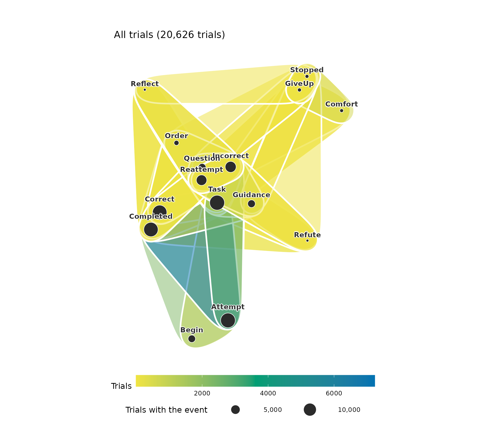
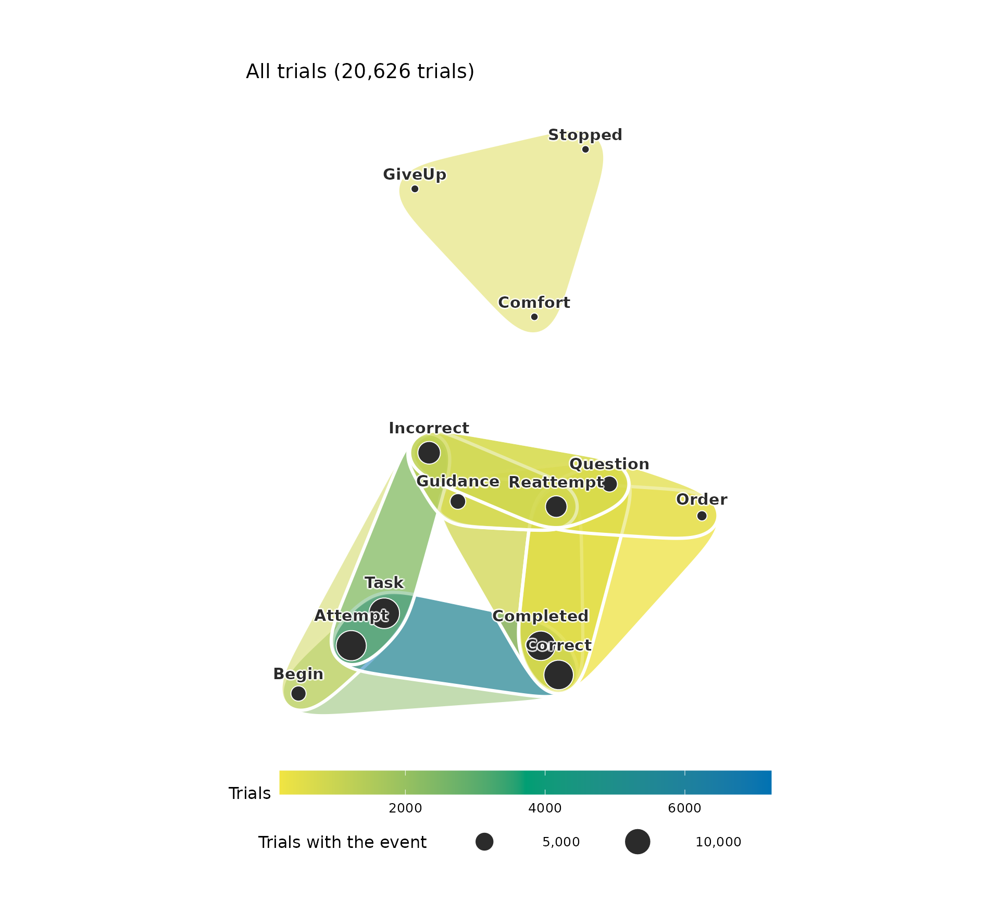
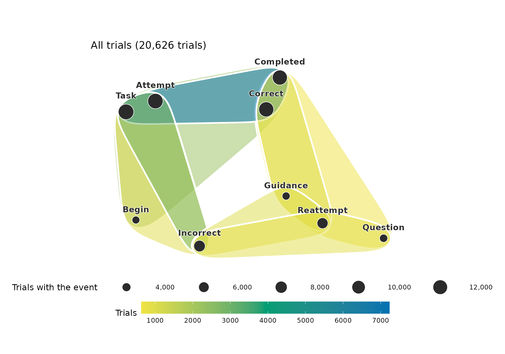
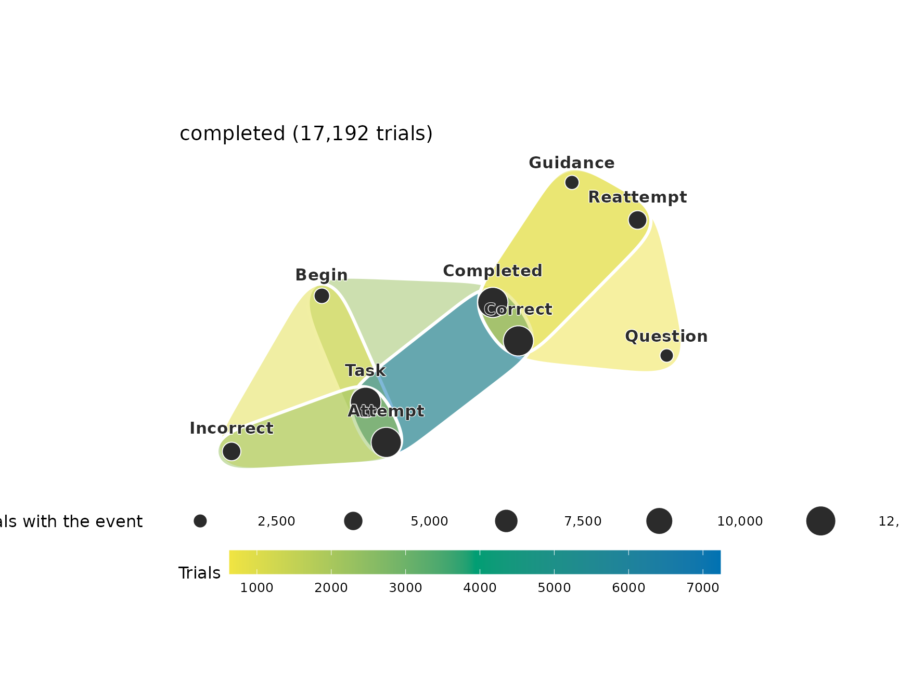
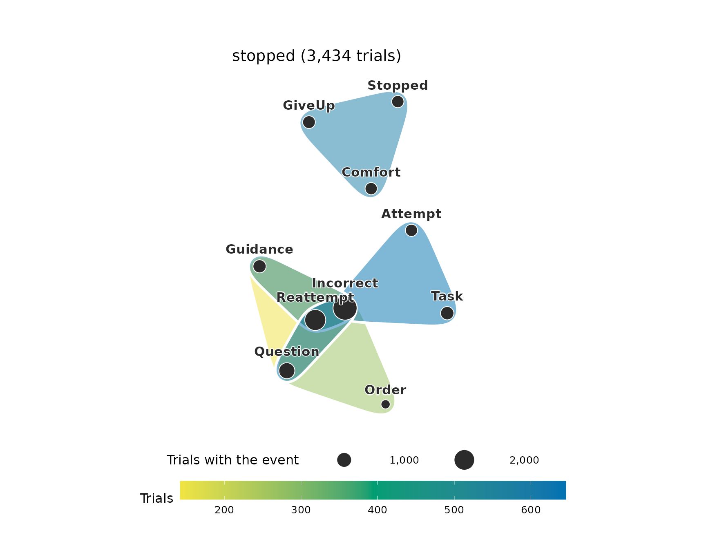
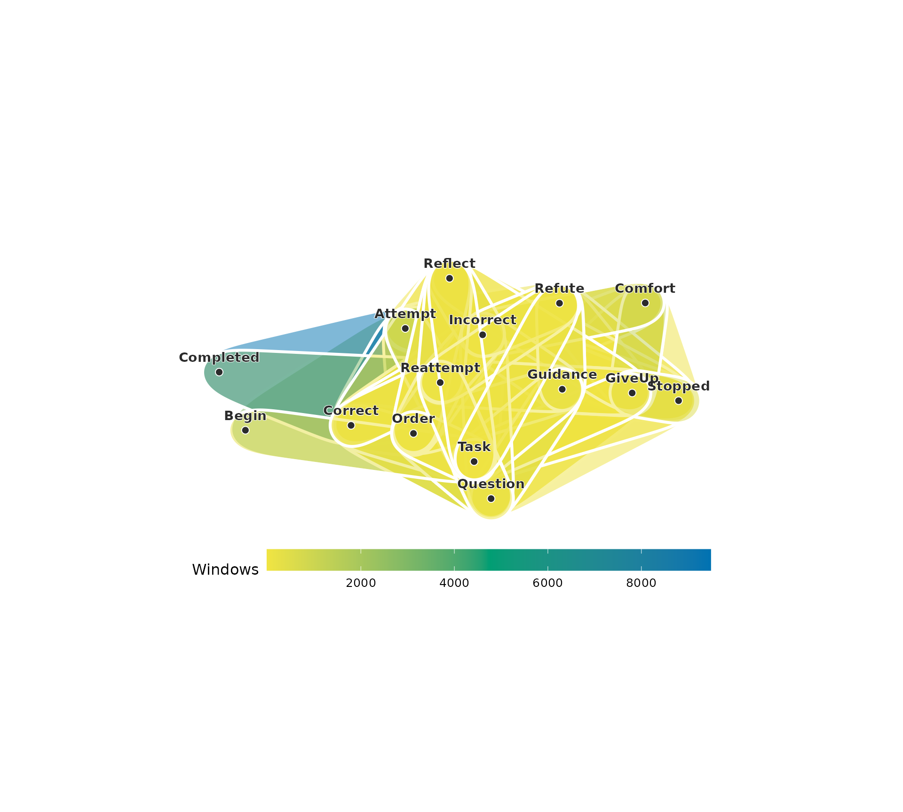
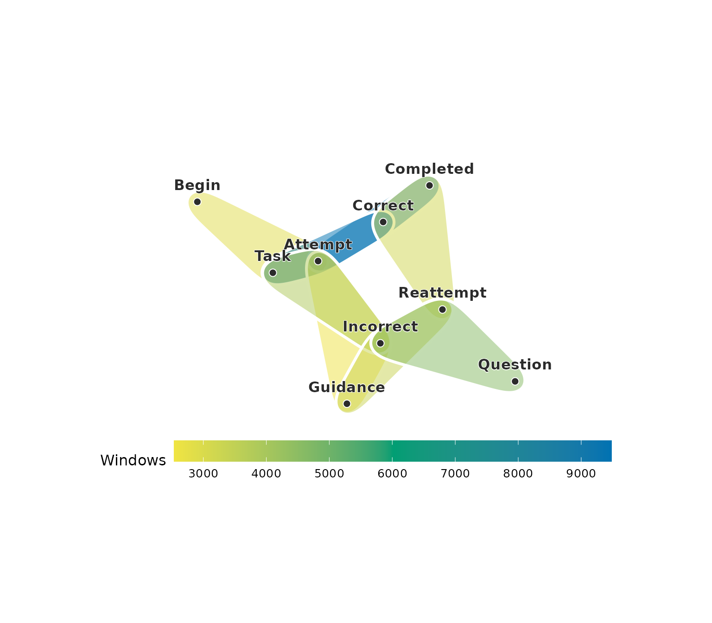
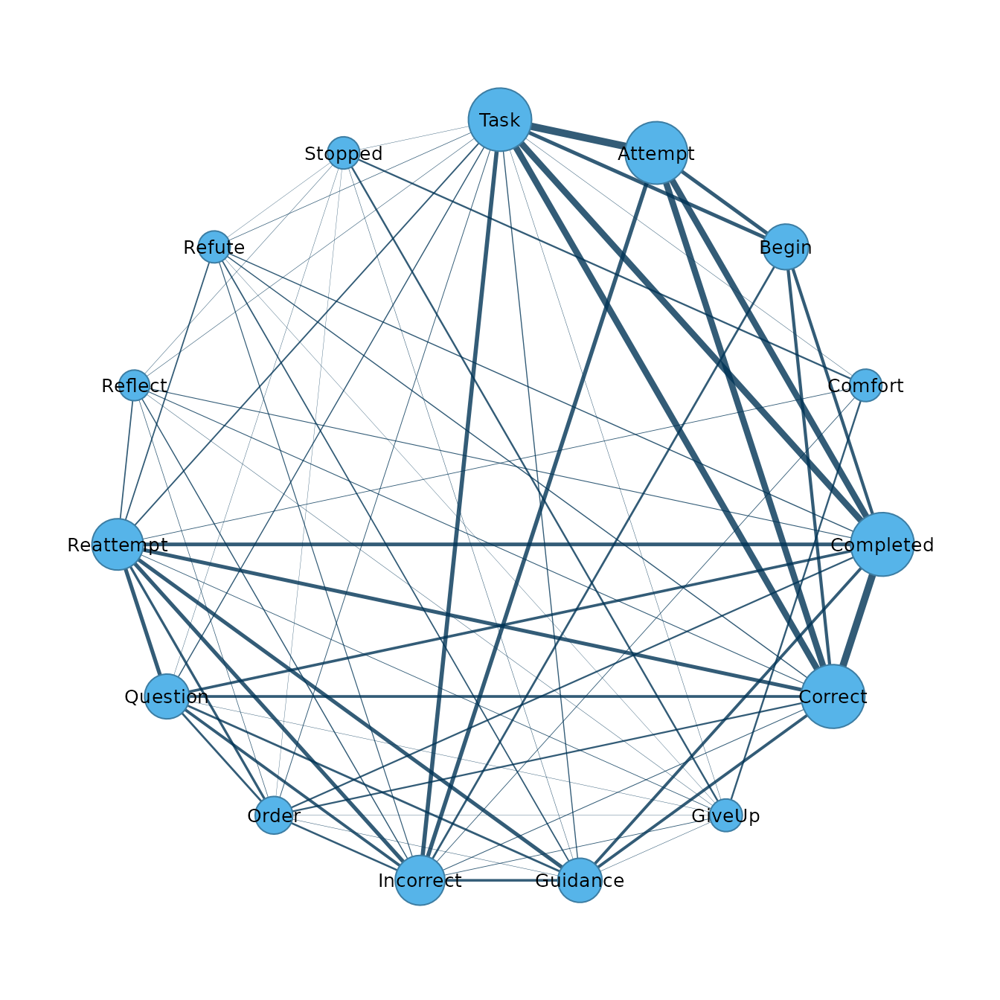
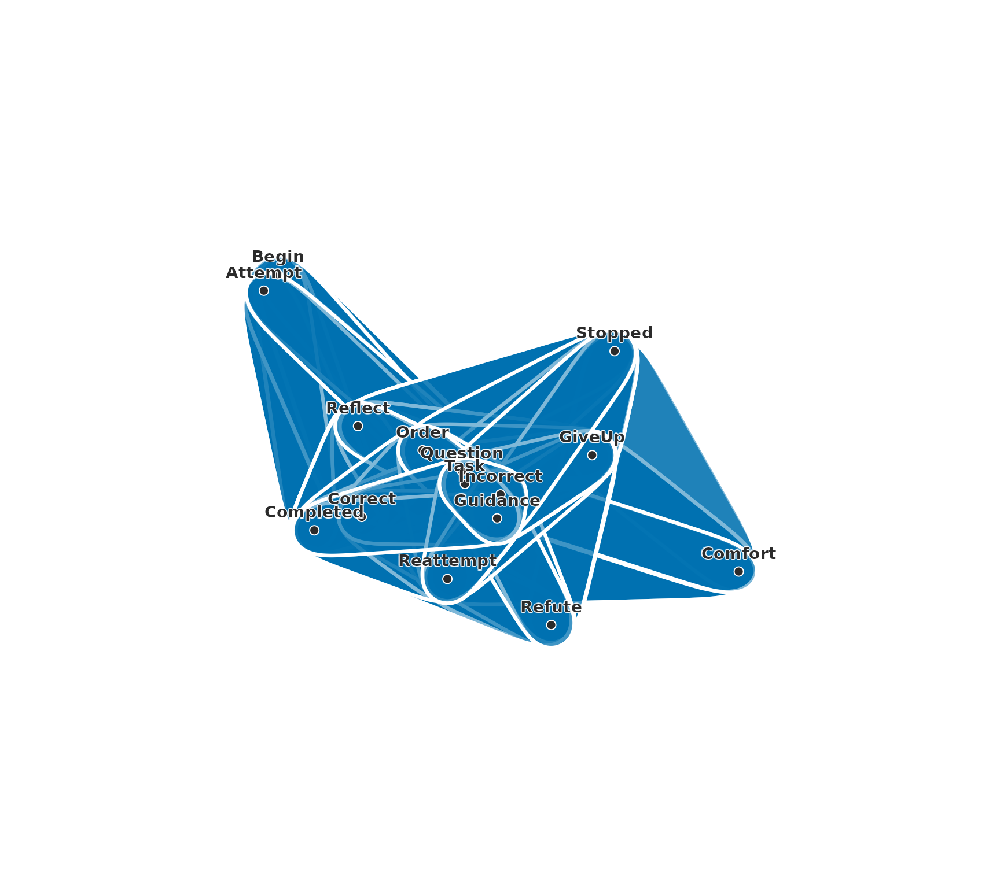
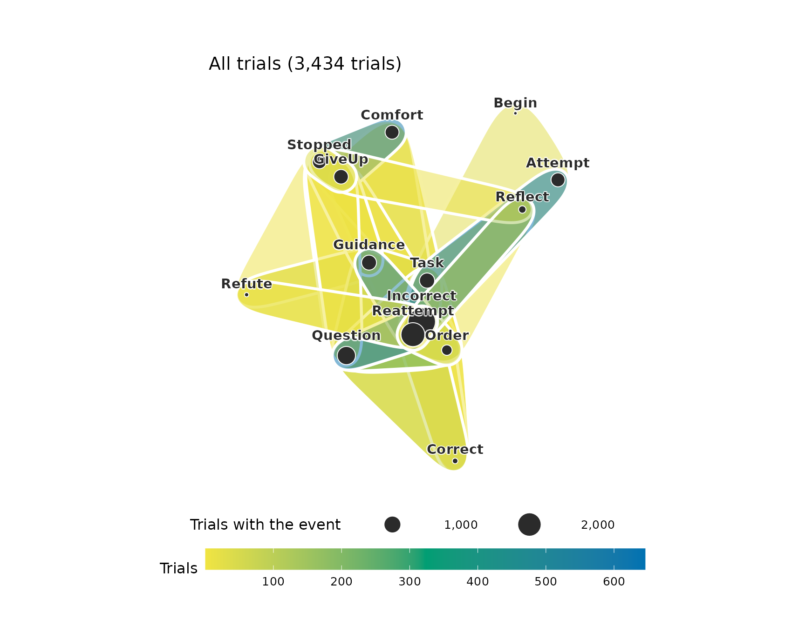

Higher-order network models extend pairwise networks in two directions. One represents interactions among groups of nodes with hypergraphs and simplicial complexes; the other represents memory in paths. This document covers hypergraphs. A hypergraph consists of a set of nodes and a set of hyperedges, and a hyperedge is a subset of the nodes of any size. An edge of a network is the special case of a hyperedge with two nodes. A hypergraph is represented by its incidence matrix, which has one row per node, one column per hyperedge, and an entry of one where the node belongs to the hyperedge. The projection of a hypergraph to a network replaces each hyperedge by the pairs of its nodes, and different hypergraphs can have the same projection. Measures computed from the incidence matrix keep the information that the projection loses.
Data
The examples use tutoring_events, a data frame in long
format with one row per event, from 13,309 problem steps that learners
worked through with an AI tutor. A step begins with the task, the
learner attempts an answer, and the answer is correct or incorrect.
After an incorrect answer the tutor responds with guidance, a question,
an order, a refutation, a prompt to reflect or comfort, and the learner
reattempts or gives up. A step ends with Completed after a
correct answer and with Stopped when it ends without one. A
trial is the part of a step between two answers.
library(hypergraphs)
head(tutoring_events, 12)
#> step trial position event outcome
#> 1 1 00001.1 1 Begin completed
#> 2 1 00001.1 2 Task completed
#> 3 1 00001.1 3 Attempt completed
#> 4 1 00001.1 4 Correct completed
#> 5 1 00001.1 5 Completed completed
#> 6 2 00002.1 1 Task stopped
#> 7 2 00002.1 2 Attempt stopped
#> 8 2 00002.1 3 Incorrect stopped
#> 9 2 00002.2 4 Question stopped
#> 10 2 00002.2 5 Guidance stopped
#> 11 2 00002.2 6 Question stopped
#> 12 2 00002.2 7 Reattempt stoppedThe data contain 20,626 trials and 15 distinct events.
Hypergraphs from observed groups
When group membership is observed, each group is a hyperedge. In an
event log, the events of a session form such a group, and a trial is a
session in this sense. In hypergraph(), action
names the column of the events and session the column of
the trials, and the events of each trial become one hyperedge.
trial_hg <- hypergraph(tutoring_events, action = "event", session = "trial")
trial_hg
#> Hypergraph: 15 nodes, 20626 hyperedges (sizes 2: 52, 3: 5734, 4: 11219, 5: 3551, 6: 70)
#> Source: group membership (node = event, hyperedge = trial)
#> hyperedge size members
#> 00001.1 5 Attempt, Begin, Completed, Correct, Task
#> 00002.1 3 Attempt, Incorrect, Task
#> 00002.2 4 Guidance, Incorrect, Question, Reattempt
#> 00002.3 3 Incorrect, Question, Reattempt
#> 00002.4 4 Guidance, Incorrect, Question, Reattempt
#> 00002.5 3 Comfort, GiveUp, Stopped
#> 00003.1 4 Attempt, Completed, Correct, Task
#> 00004.1 3 Attempt, Incorrect, Task
#> 00004.2 2 Incorrect, Reattempt
#> 00004.3 4 Guidance, Incorrect, Question, Reattempt
#> ... 20616 more rowsMost trials contain 4 events, and the largest contain 6. Many trials contain the same events: the 20,626 trials hold 56 distinct sets. A hypergraph whose hyperedges repeat is plotted as its distinct sets.
plot(trial_hg)
Each set is plotted as a hull coloured by its number of trials, and
each event as a circle whose area is the number of trials that contain
it. Most of the sets are rare and overlap the frequent ones. The minimum
support of frequent-set mining keeps the sets that occur in at least a
given share of the trials. With min_share = 0.01, the sets
of at least 1% of the trials are kept.
common_trials <- hypergraph(tutoring_events, action = "event",
session = "trial", min_share = 0.01)
common_trials
#> Hypergraph: 13 nodes, 14 hyperedges (sizes 3: 4, 4: 7, 5: 3)
#> Source: sets of event per trial, counted over all of them (sets of at least 1% per group)
#> hyperedge size
#> Attempt + Begin + Completed + Correct + Task 5
#> Attempt + Begin + Incorrect + Task 4
#> Attempt + Completed + Correct + Task 4
#> Attempt + Incorrect + Task 3
#> Comfort + GiveUp + Stopped 3
#> Completed + Correct + Guidance + Question + Reattempt 5
#> Completed + Correct + Guidance + Reattempt 4
#> Completed + Correct + Order + Question + Reattempt 5
#> Completed + Correct + Order + Reattempt 4
#> Completed + Correct + Question + Reattempt 4
#> members
#> Attempt, Begin, Completed, Correct, Task
#> Attempt, Begin, Incorrect, Task
#> Attempt, Completed, Correct, Task
#> Attempt, Incorrect, Task
#> Comfort, GiveUp, Stopped
#> Completed, Correct, Guidance, Question, Reattempt
#> Completed, Correct, Guidance, Reattempt
#> Completed, Correct, Order, Question, Reattempt
#> Completed, Correct, Order, Reattempt
#> Completed, Correct, Question, Reattempt
#> ... 4 more rows
plot(common_trials)
The 14 sets cover 93% of the trials. The sets of a stopped step, with
Comfort, GiveUp and Stopped, lie
apart from the sets of the first trial and the reattempts.
The degree of an event is the number of hyperedges that contain it.
trial_nodes <- hg_get(trial_hg, what = "nodes", sort_by = "degree")
trial_nodes
#> node degree
#> 1 Task 13700
#> 2 Attempt 13309
#> 3 Correct 12725
#> 4 Completed 12637
#> 5 Incorrect 7317
#> 6 Reattempt 6645
#> 7 Question 3482
#> 8 Guidance 3353
#> 9 Begin 3148
#> 10 Order 1324
#> 11 GiveUp 728
#> 12 Stopped 672
#> 13 Comfort 666
#> 14 Refute 333
#> 15 Reflect 318Frequent sets
Most trials fall into a few of the 56 sets. Counting the sets and
keeping the most frequent ones as hyperedges summarises the data by its
common combinations. With top = 8, the eight most frequent
sets are kept.
trial_sets <- hypergraph(tutoring_events, action = "event",
session = "trial", top = 8)
trial_set_table <- hg_get(trial_sets, what = "sets")
trial_set_table
#> group hyperedge
#> 1 All trials Attempt + Completed + Correct + Task
#> 2 All trials Attempt + Incorrect + Task
#> 3 All trials Attempt + Begin + Completed + Correct + Task
#> 4 All trials Guidance + Incorrect + Reattempt
#> 5 All trials Completed + Correct + Guidance + Reattempt
#> 6 All trials Attempt + Begin + Incorrect + Task
#> 7 All trials Incorrect + Question + Reattempt
#> 8 All trials Completed + Correct + Guidance + Question + Reattempt
#> set size count share
#> 1 Attempt + Completed + Correct + Task 4 7229 0.35047998
#> 2 Attempt + Incorrect + Task 3 2932 0.14215068
#> 3 Attempt + Begin + Completed + Correct + Task 5 2245 0.10884321
#> 4 Guidance + Incorrect + Reattempt 3 975 0.04727044
#> 5 Completed + Correct + Guidance + Reattempt 4 973 0.04717347
#> 6 Attempt + Begin + Incorrect + Task 4 903 0.04377970
#> 7 Incorrect + Question + Reattempt 3 865 0.04193736
#> 8 Completed + Correct + Guidance + Question + Reattempt 5 638 0.03093183The eight sets account for 81% of the trials. The most frequent set,
Attempt + Completed + Correct + Task, is a step completed on its first
trial. The next are a first trial with an incorrect answer, a correct
first trial that opens with Begin, and reattempts after
guidance or a question, which are correct or incorrect.
plot(trial_sets)
With group, the sets are counted separately within each
value of a comparison variable. The outcome column records
whether a step is completed with a correct answer or stopped without
one.
outcome_sets <- hypergraph(tutoring_events, action = "event",
session = "trial", group = "outcome", top = 6)
outcome_set_table <- hg_get(outcome_sets, what = "sets")
outcome_set_table
#> group hyperedge
#> 1 completed completed: Attempt + Completed + Correct + Task
#> 2 completed completed: Attempt + Incorrect + Task
#> 3 completed completed: Attempt + Begin + Completed + Correct + Task
#> 4 completed completed: Completed + Correct + Guidance + Reattempt
#> 5 completed completed: Attempt + Begin + Incorrect + Task
#> 6 completed completed: Completed + Correct + Guidance + Question + Reattempt
#> 7 stopped stopped: Attempt + Incorrect + Task
#> 8 stopped stopped: Incorrect + Question + Reattempt
#> 9 stopped stopped: Comfort + GiveUp + Stopped
#> 10 stopped stopped: Guidance + Incorrect + Reattempt
#> 11 stopped stopped: Incorrect + Order + Question + Reattempt
#> 12 stopped stopped: Guidance + Incorrect + Question + Reattempt
#> set size count share
#> 1 Attempt + Completed + Correct + Task 4 7229 0.42048627
#> 2 Attempt + Incorrect + Task 3 2287 0.13302699
#> 3 Attempt + Begin + Completed + Correct + Task 5 2245 0.13058399
#> 4 Completed + Correct + Guidance + Reattempt 4 973 0.05659609
#> 5 Attempt + Begin + Incorrect + Task 4 876 0.05095393
#> 6 Completed + Correct + Guidance + Question + Reattempt 5 638 0.03711028
#> 7 Attempt + Incorrect + Task 3 645 0.18782761
#> 8 Incorrect + Question + Reattempt 3 633 0.18433314
#> 9 Comfort + GiveUp + Stopped 3 605 0.17617938
#> 10 Guidance + Incorrect + Reattempt 3 536 0.15608620
#> 11 Incorrect + Order + Question + Reattempt 4 265 0.07716948
#> 12 Guidance + Incorrect + Question + Reattempt 4 143 0.04164240
plot(outcome_sets, group = "completed")
plot(outcome_sets, group = "stopped")
The frequent trials of completed steps are correct first trials,
incorrect first trials and correct reattempts after guidance or a
question. The frequent trials of stopped steps are incorrect first
trials and incorrect reattempts after a question, guidance or an order.
In the set Comfort + GiveUp + Stopped the tutor comforts
the learner, the learner gives up and the step ends without a correct
answer.
Hypergraphs from sequences
When only the order of events is recorded, hyperedges are formed from
windows of consecutive events in the sequence of events of each step.
Each window of window events is reduced to the set of its
distinct events, and identical sets are merged into one hyperedge whose
weight is the number of windows that produced it. The argument
action names the column of the events, actor
the column of the steps and time the column that orders the
events.
window_hg <- hypergraph(tutoring_events, action = "event", actor = "step",
time = "position", window = 3)
window_hg
#> Hypergraph: 15 nodes, 103 hyperedges (sizes 1: 3, 2: 31, 3: 69)
#> Source: windowed sequences, window = 3, step = 1 (57738 windows from 13309 sequences)
#> hyperedge size members weight
#> h1 3 Attempt, Begin, Task 2848
#> h2 3 Attempt, Completed, Correct 9474
#> h3 3 Attempt, Correct, Task 9474
#> h4 3 Attempt, GiveUp, Incorrect 1
#> h5 3 Attempt, Guidance, Incorrect 2543
#> h6 3 Attempt, Incorrect, Order 968
#> h7 3 Attempt, Incorrect, Question 124
#> h8 3 Attempt, Incorrect, Reattempt 15
#> h9 3 Attempt, Incorrect, Reflect 3
#> h10 3 Attempt, Incorrect, Refute 180
#> ... 93 more rows
window_edges <- hg_get(window_hg, sort_by = "weight", top = 8)
window_edges
#> hyperedge size members weight
#> 1 h2 3 Attempt, Completed, Correct 9474
#> 2 h3 3 Attempt, Correct, Task 9474
#> 3 h78 3 Incorrect, Question, Reattempt 4589
#> 4 h11 3 Attempt, Incorrect, Task 3836
#> 5 h57 3 Guidance, Incorrect, Reattempt 3328
#> 6 h21 3 Completed, Correct, Reattempt 3163
#> 7 h1 3 Attempt, Begin, Task 2848
#> 8 h5 3 Attempt, Guidance, Incorrect 2543
plot(window_hg)
The 57,738 windows give 103 distinct hyperedges. A window with a
repeated event contains fewer distinct events than its length, so some
hyperedges have two nodes or one. With min_weight, only
hyperedges produced by at least that many windows are kept, and
hg_subset() with size = 3 keeps the windows of
three distinct events and drops the events left in none.
frequent_windows <- hypergraph(tutoring_events, action = "event",
actor = "step", time = "position",
window = 3, min_weight = 2000)
frequent_windows <- hg_subset(frequent_windows, size = 3)
frequent_windows
#> Hypergraph: 9 nodes, 8 hyperedges (sizes 3: 8)
#> Source: windowed sequences, window = 3, step = 1 (57738 windows from 13309 sequences)
#> hyperedge size members weight
#> h1 3 Attempt, Begin, Task 2848
#> h2 3 Attempt, Completed, Correct 9474
#> h3 3 Attempt, Correct, Task 9474
#> h4 3 Attempt, Guidance, Incorrect 2543
#> h5 3 Attempt, Incorrect, Task 3836
#> h6 3 Completed, Correct, Reattempt 3163
#> h7 3 Guidance, Incorrect, Reattempt 3328
#> h8 3 Incorrect, Question, Reattempt 4589
plot(frequent_windows)
Each hull is a window of three events, coloured by the number of windows that contain exactly these events. Windows span the boundaries between trials, and the window length is set by the analyst. The remaining sections use the trials, which the data record.
Projection to a network
The projection of a hypergraph is the network in which two nodes are joined when they belong to a common hyperedge, with a weight equal to the number of such hyperedges.
trial_network <- pairwise_network(trial_hg)
trial_network_edges <- hg_get(trial_network, sort_by = "weight", top = 8)
trial_network_edges
#> from to weight
#> 1 Attempt Task 13309
#> 2 Completed Correct 12637
#> 3 Correct Task 9653
#> 4 Completed Task 9645
#> 5 Attempt Completed 9474
#> 6 Attempt Correct 9474
#> 7 Incorrect Task 4050
#> 8 Attempt Incorrect 3835
plot(trial_network)
Each edge joins two events with a width that grows with the number of
trials that contain both. The widest edges join Task,
Attempt, Correct and Completed,
which occur together in most first trials, and the edges of
Comfort, GiveUp and Stopped are
thin. The network records how often two events occur in the same trial
and leaves out which other events occur with them.
A hypergraph can also be inferred from a network by taking every
clique, a set of nodes that are all joined to each other, as a
hyperedge. With include_pairwise = FALSE the cliques of
three or more nodes are kept, and max_size is the size of
the largest clique kept, here the size of the largest trial.
clique_hg <- hypergraph(trial_network, max_size = 6, include_pairwise = FALSE)
clique_hg
#> Hypergraph: 15 nodes, 401 hyperedges (sizes 3: 139, 4: 149, 5: 87, 6: 26)
#> Source: network cliques (p = 1.00, include_pairwise = FALSE, max_size = 6)
#> hyperedge size members
#> h1 3 Completed, Reattempt, Task
#> h2 3 Incorrect, Reattempt, Task
#> h3 3 Begin, Completed, Task
#> h4 3 Begin, Incorrect, Task
#> h5 3 GiveUp, Incorrect, Reattempt
#> h6 4 GiveUp, Incorrect, Reattempt, Task
#> h7 3 GiveUp, Reattempt, Task
#> h8 3 GiveUp, Stopped, Task
#> h9 3 GiveUp, Incorrect, Task
#> h10 3 Begin, Completed, Correct
#> ... 391 more rows
plot(clique_hg)
The network has 68 pairs, and its cliques of three to 6 events give 401 hyperedges. The trials contain 54 distinct sets of three or more events, and 54 of them are among the cliques. The other 347 cliques are sets whose pairs each occur in some trial while the whole set occurs in none. Identifying the observed groups among the cliques requires the hypergraph. The cliques cover the events so densely that their hulls hide one another in the plot.
Node measures
Node measures of a hypergraph are computed from its incidence matrix. The hyperdegree of a node is the number of hyperedges that contain it, its strength is the sum of the sizes of those hyperedges, and its number of neighbours is the number of other nodes that share a hyperedge with it.
node_measures <- hg_measures(trial_hg)
node_measures
#> node hyperdegree strength max_edge_size n_neighbors
#> 1 Attempt 13309 52549 5 5
#> 2 Begin 3148 14837 5 5
#> 3 Comfort 666 2063 5 5
#> 4 Completed 12637 54166 6 10
#> 5 Correct 12725 54527 6 11
#> 6 GiveUp 728 2220 5 10
#> 7 Guidance 3353 13409 6 10
#> 8 Incorrect 7317 24199 5 12
#> 9 Order 1324 5568 6 10
#> 10 Question 3482 14180 6 9
#> 11 Reattempt 6645 25816 6 11
#> 12 Reflect 318 1108 5 8
#> 13 Refute 333 1561 6 8
#> 14 Stopped 672 1992 4 8
#> 15 Task 13700 54418 6 14
trial_summary <- hg_measures(trial_hg, what = "summary")
trial_summary
#> measure value
#> 1 n_nodes 1.500000e+01
#> 2 n_hyperedges 2.062600e+04
#> 3 density 2.597272e-01
#> 4 avg_edge_size 3.895908e+00
#> 5 pairwise_participation 6.476190e-01Attempt belongs to the first trial of every step,
Task to that trial and to some reattempts, and
Correct and Completed to the trial that ends
every completed step, so these events have the highest hyperdegree.
Hyperdegree and the number of neighbours describe different aspects of
position. Attempt belongs to 13,309 trials and shares them
with 5 other events, and Task shares a trial with every
other event. The pairwise participation is the share of pairs of nodes
that belong to at least one common hyperedge. It is 0.65, so 35% of the
pairs of events never occur in the same trial.
Centrality
An eigenvector centrality gives a node a score that depends on the scores of the nodes it shares hyperedges with. The clique centrality is the eigenvector centrality of the projection. The Z and H centralities score a node by the product of the scores of the other members of each of its hyperedges. In the H centrality the score of the node itself is raised to the power k - 1, where k is the size of the largest hyperedge, and the scores are more even.
event_centrality <- hg_centrality(trial_hg, sort_by = "H")
#> Warning: Z-eigenvector centrality did not converge in 1000 iterations (L1
#> change > 1e-08); returning the last iterate.
event_centrality
#> node clique Z H
#> 1 Task 0.4894640054 5.449472e-01 0.3479110
#> 2 Attempt 0.4836827761 5.465657e-01 0.3474610
#> 3 Incorrect 0.1376653411 3.935385e-01 0.3400583
#> 4 Correct 0.4779506444 3.473878e-01 0.3071417
#> 5 Completed 0.4772478186 3.480787e-01 0.3068320
#> 6 Reattempt 0.1246067692 4.254999e-03 0.2921017
#> 7 Guidance 0.0750977253 1.026613e-03 0.2579205
#> 8 Question 0.0717345377 8.695176e-04 0.2544459
#> 9 Begin 0.1555411439 8.699988e-02 0.2194756
#> 10 Order 0.0267973779 1.707115e-04 0.1979402
#> 11 GiveUp 0.0006139705 0.000000e+00 0.1875582
#> 12 Stopped 0.0001368497 0.000000e+00 0.1865088
#> 13 Comfort 0.0005712919 0.000000e+00 0.1783542
#> 14 Reflect 0.0050667426 1.637261e-04 0.1764803
#> 15 Refute 0.0084861320 3.265331e-06 0.1313363The clique centrality is highest for the events of a correct first
trial, Task, Attempt, Correct and
Completed, which occur together in most steps. The Z and H
centralities rank Incorrect third. An incorrect first trial
contains Incorrect with Task and
Attempt, the two highest-scoring events, and the product of
their scores raises the score of Incorrect.
PageRank on a hypergraph is the stationary distribution of a random walk that moves from a node to a hyperedge that contains it and from the hyperedge to one of its members, with a fixed probability of restarting at a random node.
event_pagerank <- hg_pagerank(trial_hg, sort_by = "pagerank")
event_pagerank
#> node pagerank
#> 1 Task 0.11935654
#> 2 Correct 0.11735411
#> 3 Completed 0.11645478
#> 4 Attempt 0.11484022
#> 5 Reattempt 0.08732223
#> 6 Incorrect 0.08570768
#> 7 GiveUp 0.05872165
#> 8 Stopped 0.05651218
#> 9 Comfort 0.05483761
#> 10 Question 0.04756710
#> 11 Guidance 0.04722743
#> 12 Begin 0.03574196
#> 13 Order 0.02586104
#> 14 Reflect 0.01687748
#> 15 Refute 0.01561799Comfort, GiveUp and Stopped
occur mostly together in the last trial of a stopped step, so a walk
that reaches one of them moves among the three for several moves before
it leaves. They rank seventh to ninth by PageRank and close to zero by
the clique and Z centralities.
Communities and clusters
A community is a set of nodes that share more hyperedges with each other than with the rest of the hypergraph. The communities of the events are found with the map equation from 20 random starts, and the partition reported is the medoid, the partition that agrees most with the other 19.
event_communities <- hg_communities(trial_hg, n_runs = 20, seeds = 1:20)
event_communities
#> Hypergraph Infomap communities: 15 nodes, 2 communities (the medoid of 20 runs, run 1, seed 1)
#> node community
#> Attempt 1
#> Begin 1
#> Comfort 2
#> Completed 1
#> Correct 1
#> GiveUp 2
#> Guidance 1
#> Incorrect 1
#> Order 1
#> Question 1
#> ... 5 more rowsSpectral clustering divides the nodes into k clusters by
the eigenvectors of the hypergraph Laplacian. Its final k-means step
starts from random centres, which seed fixes.
event_clusters <- hg_cluster(trial_hg, k = 3, seed = 1)
event_clusters
#> node cluster
#> 1 Attempt Cluster 1
#> 2 Begin Cluster 1
#> 3 Comfort Cluster 2
#> 4 Completed Cluster 1
#> 5 Correct Cluster 1
#> 6 GiveUp Cluster 2
#> 7 Guidance Cluster 3
#> 8 Incorrect Cluster 3
#> 9 Order Cluster 3
#> 10 Question Cluster 3
#> 11 Reattempt Cluster 3
#> 12 Reflect Cluster 3
#> 13 Refute Cluster 3
#> 14 Stopped Cluster 2
#> 15 Task Cluster 1The clusters are the end of a stopped step (Comfort, GiveUp and Stopped), the events of a correct first trial (Attempt, Begin, Completed, Correct and Task), and the incorrect answers, the reattempts and the moves of the tutor (Guidance, Incorrect, Order, Question, Reattempt, Reflect and Refute). The adjusted Rand index measures the agreement between two partitions of the same nodes, corrected for chance.
partition_agreement <- hg_agreement(event_communities, event_clusters)
partition_agreement
#> n agreement aligned ari
#> 1 15 0 10 0.399804
partition_table <- hg_agreement(event_communities, event_clusters,
what = "table")
partition_table
#> label_x label_y n
#> 1 1 Cluster 1 5
#> 2 1 Cluster 3 7
#> 3 2 Cluster 2 3The map equation separates the end of a stopped step from the other events. Spectral clustering divides the other events into those of a correct first trial and those of the reattempts. The adjusted Rand index between the two partitions is 0.40.
Null models
A structural pattern is assessed against random hypergraphs that keep the size of every hyperedge and the degree of every node. Such hypergraphs are generated by repeated swaps of members between pairs of hyperedges, and the observed value of a statistic is compared with its distribution over the random hypergraphs. The comparison is made on the trials of the stopped steps.
stopped_events <- subset(tutoring_events, outcome == "stopped")
stopped_hg <- hypergraph(stopped_events, action = "event", session = "trial")
plot(stopped_hg)
stopped_null <- hg_null_test(stopped_hg, n = 99, seed = 1,
statistic = c("pairwise_participation",
"avg_jaccard", "repeated_edges"))
stopped_null
#> statistic observed null_mean null_lo null_hi
#> 1 pairwise_participation 0.5824176 0.9661450 0.9450549 0.9890110
#> 2 avg_jaccard 0.3553698 0.3094343 0.3089911 0.3099125
#> 3 repeated_edges 3398.0000000 3003.7575758 2992.4500000 3015.0000000
#> z p_value n method
#> 1 -32.46831 0.01 99 swap
#> 2 186.22152 0.01 99 swap
#> 3 63.61230 0.01 99 swapIn the random hypergraphs 96.6% of the pairs of events occur together in some trial, against 58% in the data. About 3,004 trials repeat the set of an earlier trial, against 3,398 in the data, and the mean Jaccard index between two trials is 0.31, against 0.36. The trials of stopped steps repeat a small number of sets, and each set keeps together events that the random hypergraphs spread over many trials. The p-value of 0.01 is the smallest attainable with 99 random hypergraphs. The observed pairwise participation lies 32 standard deviations below the mean of the random hypergraphs, and the number of repeated trials 64 standard deviations above it.
Other higher-order structures
A corpus of documents forms a hypergraph in which each document is a
hyperedge over its words, built with text_hypergraph().
Memory networks are estimated from paths with hon(), and
simplicial complexes, in which every subset of a relation is also a
relation, are built with simplicial(). The help page
?hypergraphs lists the functions of each family.